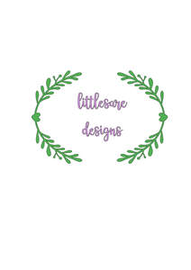

Trade Mark Journal No.2026/005 30 January 2026
UK00004324887 15 January 2026 (3,16,21,25)

- Class 3
- Perfume; Perfume oils; Room perfume sprays; Aftershave lotions; Body fragrances; Room perfumes in spray form; Room fragrances; Aftershave; Solid perfumes; Aftershave balms; Scented linen sprays; Air fragrance reed diffusers; Scented body lotions; Scented soaps; Perfumed creams; Scented body spray; Scented room sprays; Scented wax melts; Wax melts [fragrancing preparations]; Cleaning fluids; Liquid laundry detergents; Cleaning foam; Cleaning sprays; Soap; Shaving soap; Cream soaps; Body cream soap; Perfumed soap; Shower soap; Cakes of soap; Bath soap; Sugar soap; Aloe soap; Handmade soap; Cakes of soap for body washing; Shaving soaps; Bars of soap; Liquid soap for laundry; Bath bombs; Bubble bath; Bath powder; Bath salts; Bath lotion; Bubble bath preparations; Shower and bath foam; Bath and shower foam; Bath gel; Bath oil; Bath and shower gels; Bath crystals; Non-medicated bath salts; Carpet shampoo; Carpet cleaners; Carpet cleaning preparations; Carpet freshening preparations; Preparations for the bath and shower.
- Class 16
- Printed invitations; Printed cards; Printed paper invitations; Printed certificates; Printed coupons; Printed tickets; Gift cards; Paper gift boxes; Gift boxes made of cardboard; Mini photo albums; Photographs; Photographs [printed].
- Class 21
- Mugs; Tumblers; Tumblers [drinking vessels].
- Class 25
- Pyjamas; Nightwear; Nightdresses; Trousers; Trousers shorts; Housecoats; Sweatpants; Sleep shirts; Clothing; Knitwear [clothing]; Ready-to-wear clothing; Clothing of leather; Silk clothing; Parts of clothing, footwear and headgear; Embroidered clothing; Ready-made clothing; T-shirts; Hoodies; Sweatshirts; Beanies; Caps; Caps with visors; Caps [headwear]; Skull caps; Baseball caps.
sarah louise Green